地政学
シェムリアップは首都ではないが、アンコール遺跡を通じて国家の歴史像と観光外交を担う。タイ国境、湖、空港、保護区が近く、文化財管理と地域開発が重なる結節点だ。小都市でも国の物語を背負う。国家像も映す。

🇰🇭 カンボジア / アジア / World City Atlas
アンコール遺跡群への玄関口であり、トンレサップ湖、農村、観光労働、仏教儀礼、クメール王朝の記憶が重なる都市。世界遺産の華やかさと生活の脆さを同時に読む場所です。
都市の骨格
シェムリアップは小さな都市の規模でありながら、アンコールの石造寺院、トンレサップ湖の水上生活、農村、国際空港を結びます。観光客の移動と住民の生活圏が近く、都市の繁栄は季節と世界情勢に敏感です。
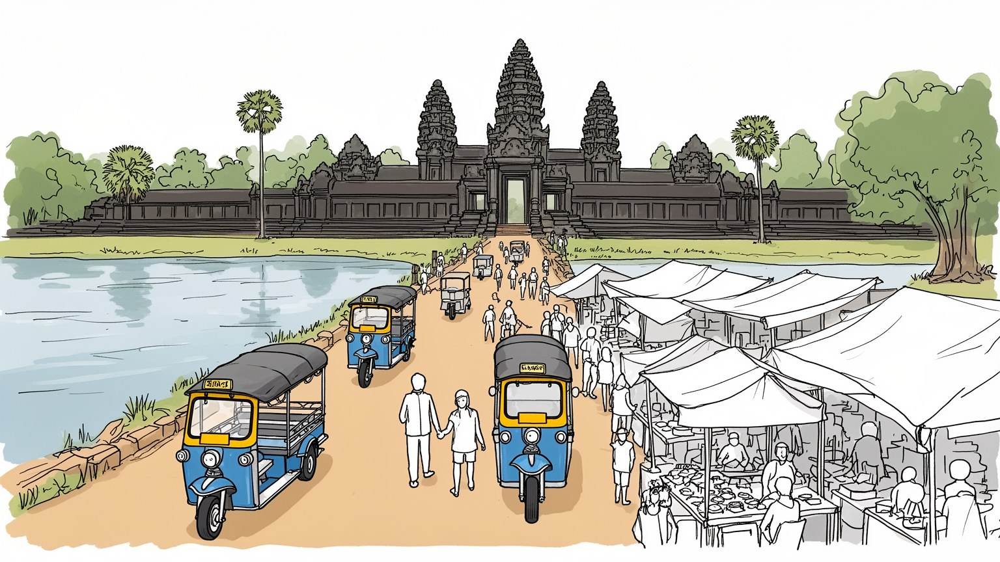
シェムリアップは首都ではないが、アンコール遺跡を通じて国家の歴史像と観光外交を担う。タイ国境、湖、空港、保護区が近く、文化財管理と地域開発が重なる結節点だ。小都市でも国の物語を背負う。国家像も映す。
宿泊、飲食、案内、運転、清掃、舞踊、手工芸が観光を支える。繁忙期は現金収入を生む一方、感染症や政情、航空便減少で仕事が消えやすく、農村の副業も重要である。季節労働の脆さも大きい。働く家計も揺れる。
寺院観光の背後には上座部仏教の暦、僧院、精霊信仰、祖先供養がある。アプサラ舞踊や石彫の図像は舞台芸術だけでなく、クメールの記憶を暮らしに戻す媒体だ。祈りは日常の秩序を保つ。祈りは共同体の軸になる。
旧市場や川沿いは旅行者でにぎわうが、住民には家賃、教育、医療、雨季の道路、低賃金がある。名所を守る観光は、働く人と周辺村落の生活を支えてこそ成り立つ。滞在の楽しさと生活の負担が隣り合う。地域の負担も残る。
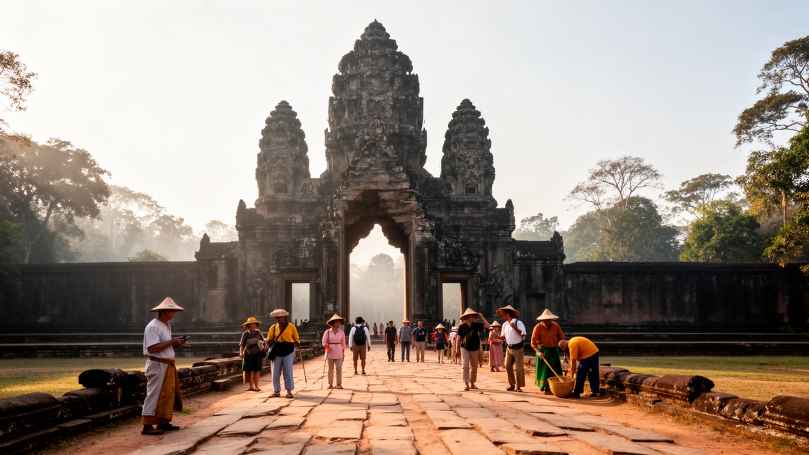
シェムリアップの第一の特徴は、都市そのものがアンコール遺跡群への入口として組み立てられていることです。中心部のホテル、ゲストハウス、レストラン、旅行会社、トゥクトゥク乗り場、土産物店は、早朝に寺院へ向かい、夕方に戻る観光客の時間割に合わせて動きます。しかしアンコールは単なる観光背景ではありません。水利施設、堀、参道、城壁、寺院群は、かつてのクメール王朝が宗教、王権、農業、労働動員を結びつけた広大な都市システムの跡です。シェムリアップはその遺構を訪れる拠点であると同時に、現代国家が歴史をどう語り、観光収入をどう配り、保存と生活をどう両立させるかを試される都市でもあります。遺跡に近い村では、土地利用、交通規制、保全区域、商売の許可が暮らしに影響します。石の壮麗さを見るだけでなく、その周囲で働く案内人、修復技師、清掃員、警備員、農家、僧院の生活を重ねて見ると、世界遺産は静止した過去ではなく、現在の生活と制度の中で保たれていることが分かります。観光客の期待が大きいほど、街は古代のイメージを演出しますが、住民にとっては学校、病院、市場、雨季の道路も同じだけ重要です。シェムリアップを読む入口は、寺院への道が現在の雇用、交通、家族の収入まで伸びている点にあります。朝焼けを待つ人の列と、仕事へ向かう住民の列は同じ道路で重なり、この都市の二重性を見せます。
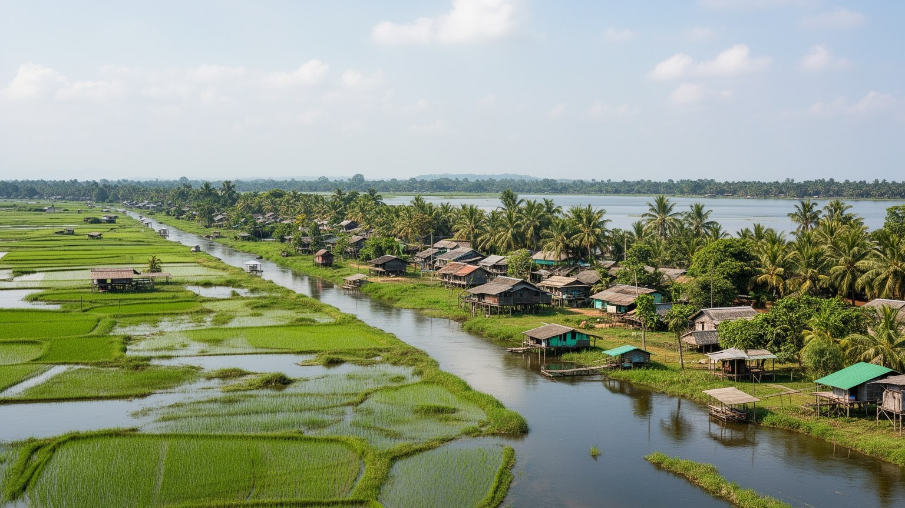
シェムリアップは内陸都市に見えますが、実際には水の季節に強く左右されます。市街を流れるシェムリアップ川は小さな川ですが、アンコールの堀や貯水池、南のトンレサップ湖へ続く平野と結びつき、都市の位置を決めています。乾季には道路と寺院巡りがしやすく、雨季には緑が濃くなり、田畑と湖の水位が変わります。トンレサップ湖は単なる観光先ではなく、漁業、水上集落、季節移動、食料供給を支える巨大な生活圏です。湖の水位変化は魚、稲作、交通、学校通いに影響し、貧しい世帯ほど水と道路の条件に生活を左右されます。アンコールの古代水利はしばしば壮大な技術として語られますが、現代の都市も排水、井戸、地下水、河岸の整備、洪水対策に依存しています。ホテルが増え、観光客が戻るほど水需要は増え、地下水や廃水管理の問題も重くなります。街を歩くと、寺院への幹線道路、川沿いの緑地、旧市場、郊外の田畑、湖へ向かう道が一つの水の地図を作ります。シェムリアップの地形を読むことは、石造寺院だけでなく、水位、泥道、橋、堤、農村の収穫期を見ることです。水は観光の風景を美しくするだけでなく、都市の衛生、食、移動、貧困を決める基盤です。気候変動で雨の降り方が不安定になれば、排水の弱い地区や湖に近い集落ほど影響を受け、都市計画と農村支援は切り離せなくなります。
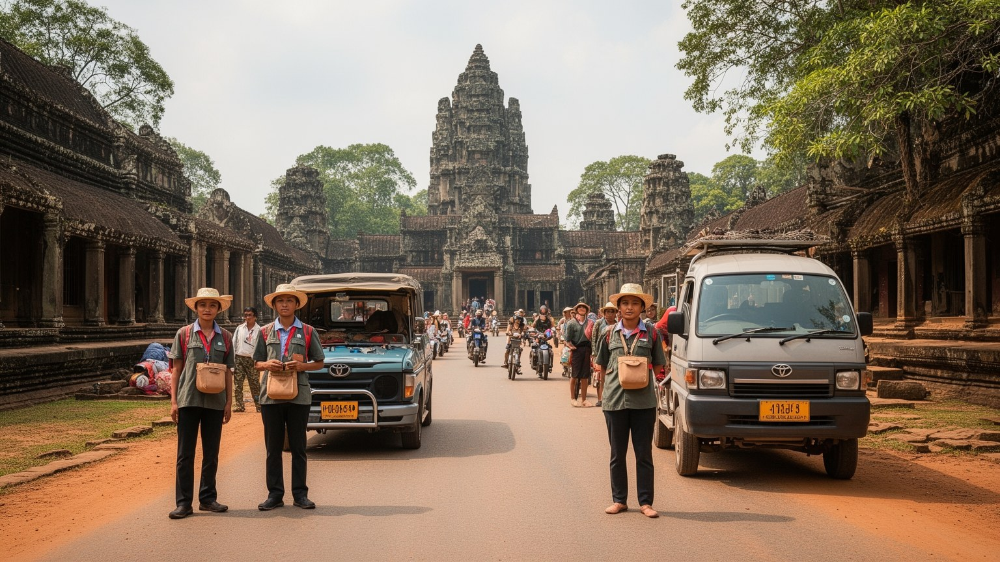
シェムリアップの経済は観光に深く依存しています。ホテル、ゲストハウス、レストラン、マッサージ店、旅行代理店、土産物店、舞踊公演、写真撮影、ガイド、運転手、清掃、警備、洗濯、食品配送が、アンコールを訪れる人の滞在を支えます。観光が好調な時期には、多くの若者が農村から市街へ働きに出て、外国語や接客を身につけ、家族へ現金を送ります。一方で、この産業は外部の変化に弱い構造を持ちます。感染症、航空便の減少、国際情勢、燃料価格、旅行者の嗜好の変化は、予約のキャンセルや勤務時間の削減として現場に届きます。高級ホテルの表側と、厨房、洗濯場、清掃、深夜の帰宅、非正規の案内業は別の時間で動きます。観光客が短い滞在で支払う金額が、どの程度地域の労働者に残るかも重要です。土産物が地元制作か輸入品か、ガイドが資格を持って安定して働けるか、女性や若者が安全に働けるかで、都市の豊かさは変わります。シェムリアップを経済都市として見るなら、ホテル数や観光客数だけでなく、働く人の賃金、技能、休息、住宅、教育への接続を読む必要があります。観光都市の強さは、寺院の魅力だけでなく、季節変動を越えて生活を守れる労働基盤にあります。加えて、観光で得た技能が他産業へ移れるか、休閑期に収入を補える仕組みがあるかも、家族の安定を左右します。
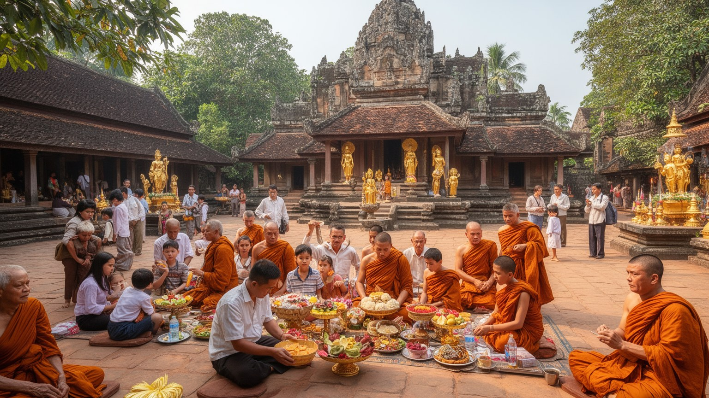
アンコール遺跡はヒンドゥー教と仏教、王権と宇宙観が重なった石の世界ですが、シェムリアップの日常の信仰は現在の僧院、仏教行事、祖先供養、精霊への配慮の中で続いています。市街や村には寺があり、僧侶は葬儀、祝福、教育、相談、年中行事に関わります。観光客が見る寺院の彫刻は美術として整えられていますが、住民にとって宗教は家族の節目、病気、商売、土地、先祖との関係を整える実践です。水祭り、クメール正月、プチュム・バンのような行事は、都市の暦を作り、遠くで働く人を故郷へ戻します。アプサラ舞踊も、舞台観光の演目であるだけでなく、王朝の記憶、身体技法、女性の訓練、衣装制作、音楽の継承を含む文化実践です。シェムリアップでは古代の神像と現在の僧院が近くにあり、観光のまなざしと信仰のまなざしが同じ場所を別の意味で使います。重要なのは、寺院を単なる遺跡にしすぎないことです。石の保存と同じくらい、儀礼を続ける人、舞踊を学ぶ子ども、仏具を作る職人、祭りを支える市場の仕事が都市の文化を生かします。信仰は過去を飾るものではなく、観光に揺れる都市で人が時間と共同体を取り戻す方法でもあります。寺院の静けさは、観光の賑わいを受け止める精神的な余白でもあり、都市の尊厳を保つ場所です。僧院は若者の学びや地域相談の場にもなり、観光の外側で生活を支えます。
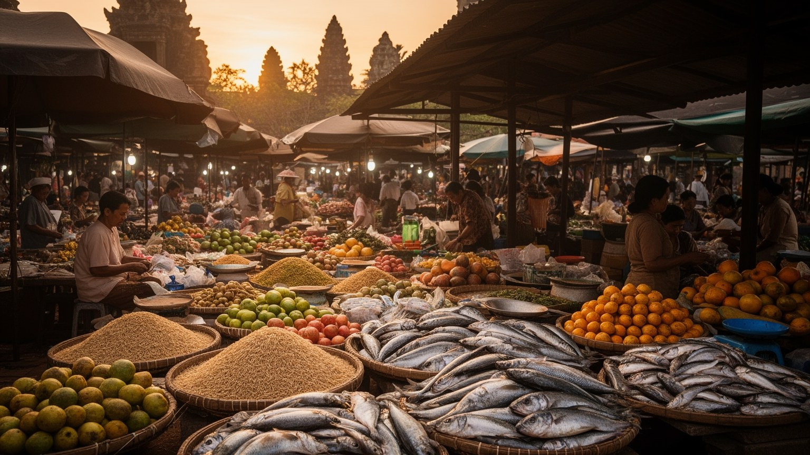
シェムリアップの市街を理解するには、寺院だけでなく市場を見る必要があります。旧市場周辺には野菜、魚、肉、果物、香辛料、衣料、土産物、両替、食堂、屋台が集まり、住民の日用品と観光客向けの消費が近い距離で混ざります。朝は地元の買い物と仕込みが中心になり、昼は暑さを避ける人の休憩が増え、夜は川沿いや繁華街に旅行者の食事と娯楽が広がります。料理には魚醤、香草、米、淡水魚、ココナツ、発酵食品が使われ、湖と田畑の季節が食卓に入ります。観光客に分かりやすいレストランが増える一方で、地元の朝食、屋台の麺、家族経営の食堂、僧院近くの小さな店は、働く人の生活リズムを支えます。市場は女性の労働がよく見える場所でもあります。仕入れ、値付け、調理、片付け、家計の管理は、観光都市の表に出にくい経済を作ります。土産物や工芸品には、地元の手仕事を支えるものもあれば、外から流通する量産品もあります。何を買うかは、地域にお金が残るかに関わります。市場と食を読むと、シェムリアップが世界遺産の玄関口である前に、毎日の食材、現金、会話、暑さ、雨をやりくりする生活都市であることが見えてきます。価格交渉や朝の仕入れの声は、観光向けの演出ではなく、地域経済そのものの音です。食の流通を追うと、湖の漁師、近郊の農家、屋台の家族が市街でつながる構造も見えてきます。
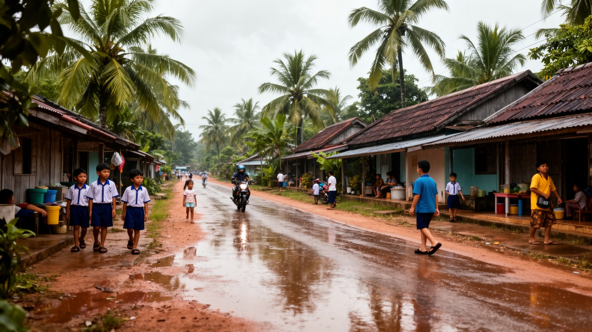
シェムリアップの日常は、観光の明るい表情だけでは捉えられません。中心部には宿泊施設、カフェ、外国人向けの店が増え、川沿いや幹線道路は整備されますが、少し外へ出ると未舗装の道、雨季のぬかるみ、小さな商店、木造住宅、集合住宅、郊外の村が続きます。観光収入は家族の学費や住宅改修を支える一方、中心部の地価や家賃を押し上げ、低賃金の労働者を職場から遠ざけることがあります。若者は英語や中国語を学び、接客やガイドを目指しますが、安定した雇用に届かない人も多くいます。子どもの教育、医療へのアクセス、交通事故、飲酒に伴う安全、女性の夜間帰宅、障害者や高齢者の移動は、観光案内に出にくい日常の課題です。電気、水道、排水、廃棄物処理が十分でない地区では、ホテルや繁華街の快適さとの差がはっきりします。住民にとって都市の価値は、寺院に近いかだけでなく、学校へ通えるか、雨の日に働きに行けるか、病気の時に支援を受けられるかで決まります。シェムリアップを生活都市として読むと、世界中の旅行者を迎える華やかさと、季節労働に頼る世帯の不安定さが同じ地図に重なります。観光の成功は、住む人の暮らしを細らせない形で使われて初めて持続します。公共空間、街灯、排水、学校への道の改善は、観光客の快適さより先に住民の安心を支える投資です。
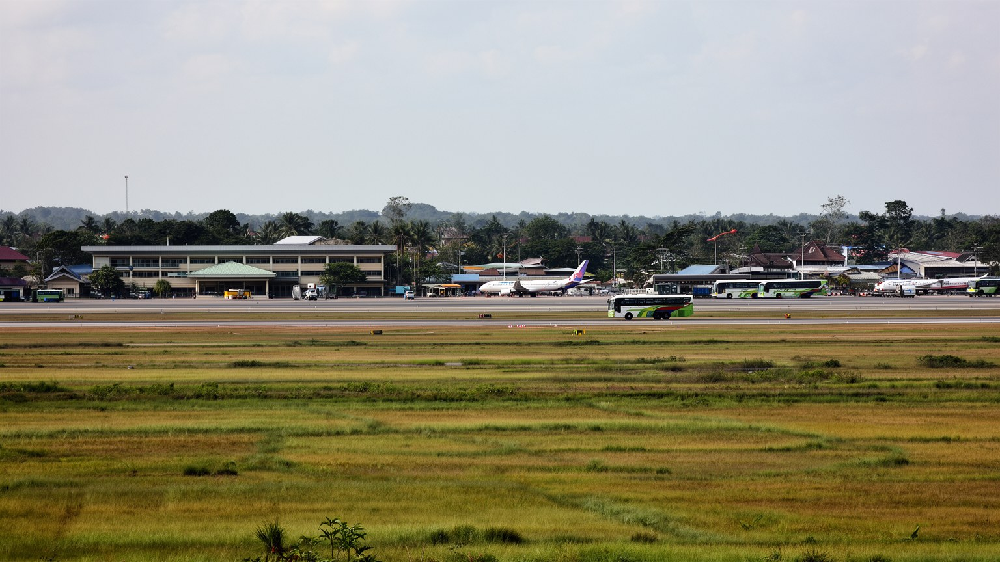
シェムリアップの国際性は、寺院の名声だけでなく空港と道路によって作られます。新しいシェムリアップ・アンコール国際空港は市街とアンコール遺跡から離れた場所に置かれ、航空機の騒音や振動を遺跡から遠ざける一方、移動距離、送迎費、沿道開発、土地取引の問題を生みます。空港が大きくなると、旅行者はより直接シェムリアップへ入り、首都プノンペンを経由しない動線も増えます。これは観光には有利ですが、収益が市内の小規模事業者へ届くかは別の問題です。大型バス、専用車、配車サービス、トゥクトゥク、バイク、徒歩が同じ道路を使い、交通安全は日常の大きな課題になります。地域接続は国内にも広がります。バッタンバン、プノンペン、タイ国境、トンレサップ湖周辺の村と結ばれることで、人、食材、建材、労働者、学生が動きます。観光客の移動は短く見えても、その背後には農村から働きに来る人、家族へ送金する人、工芸品を運ぶ人、食材を仕入れる人の長い移動があります。シェムリアップを見る時、空港を便利な入口としてだけでなく、地域の土地利用と交通の秩序を変える装置として読む必要があります。世界へ開くほど、都市は周辺の村と道路に新しい負担も分け合うことになります。空港アクセスの料金や雇用配分が偏れば、国際化の利益は市民全体へ広がりにくくなります。
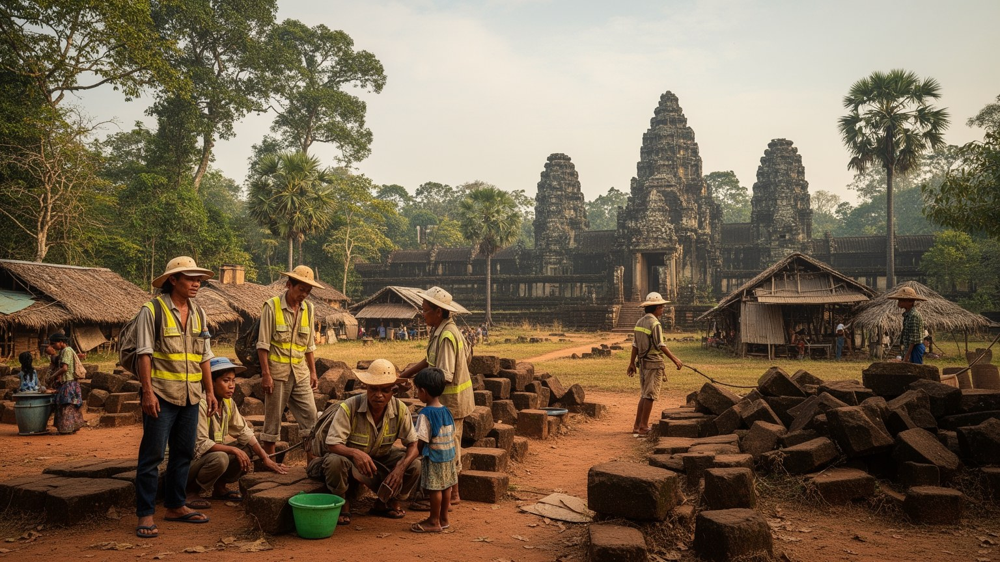
シェムリアップでは、遺産保護と生活改善が常に隣り合います。アンコール遺跡群は世界的な文化財であり、石材の修復、排水、樹木管理、観光動線、盗掘対策、景観保護が必要です。同時に、遺跡周辺には長く暮らしてきた村があり、農地、住居、商売、祭礼、移動の自由も生活の権利です。保護区域を厳しくすれば保存には有利ですが、住民の改築や商売が制限されることがあります。反対に観光開発を広げすぎれば、遺跡の静けさや地下水、交通、安全が損なわれます。この緊張は、世界遺産都市が避けられない問題です。貧困、教育格差、子どもの保護、地雷や戦争の記憶、土地権利、障害者支援も、観光の明るい物語の外側に残ります。旅行者が短い滞在で見る笑顔の背後には、家計の不安や季節収入への依存があります。遺産を守るとは、石を保存するだけではありません。そこで暮らす人が不当に追い出されず、保存の利益が地域へ戻り、子どもが学校へ行き、職人やガイドが誇りを持って働ける条件を作ることです。シェムリアップの社会課題を読むことは、観光を否定することではなく、観光が誰に利益をもたらし、誰に負担を置くのかを見えるようにすることです。保存と生活の両方を守る設計が、都市の信頼を決めます。国際機関、政府、地域住民、事業者の合意形成が遅れれば、保護の名目も開発の名目も不信を生みます。
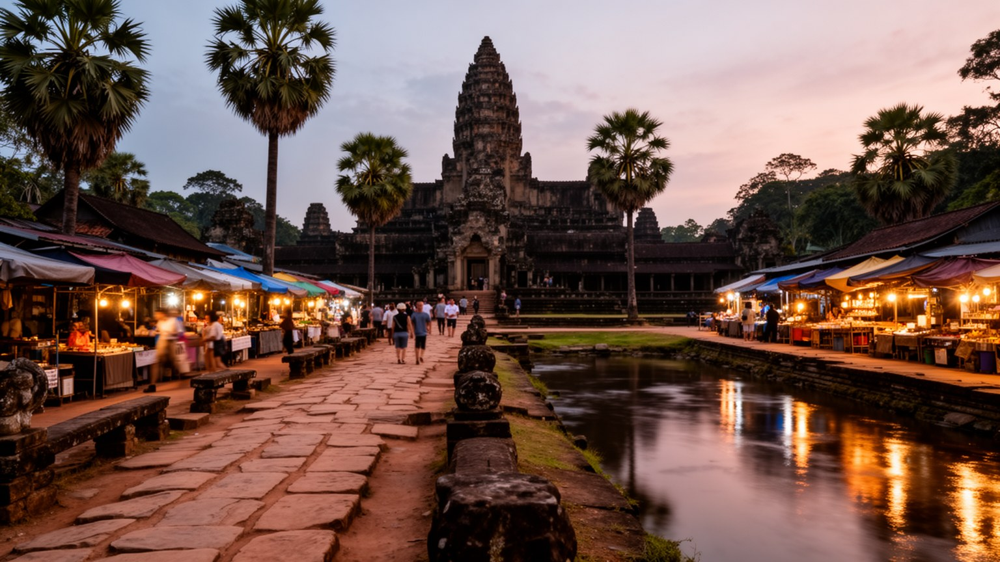
シェムリアップ観光はアンコール・ワットの朝焼けに象徴されますが、都市の景観はそれだけではありません。バイヨンの顔、タ・プロームの樹木、堀に映る空、赤土の道、郊外の水田、川沿いの散歩道、旧市場の屋根、夜の屋台、湖上集落への船着き場が、さまざまな速度で旅行者を迎えます。観光は視線の産業です。写真を撮る場所が人気になるほど、道は混み、売り子が集まり、静かな祈りの場所にも消費の圧力がかかります。寺院を歩く時は、日差し、石段、修復中の足場、警備の導線、参拝する人の動きが同じ空間にあります。都市側では、旅行者向けの通りと住民の買い物道が交差し、夜のにぎわいは収入と騒音の両方を生みます。景観を守るとは、古い建物を背景として残すだけでなく、過剰な看板、交通、廃棄物、水質、光、音を管理することでもあります。シェムリアップの魅力は、世界遺産の壮大さと小都市の歩きやすさが近い点にあります。その近さを壊さないためには、観光客が増えても寺院、川、村、市場のそれぞれが別の生活リズムを持つことを尊重する必要があります。美しい景色は、管理と節度、住民の協力によって初めて長く残ります。写真の外側にある順路、休憩所、トイレ、日陰、案内表示の質も、観光体験と住民生活の両方を支えます。景観の価値は、写るものだけでなく、そこに残る暮らしの静けさにもあります。
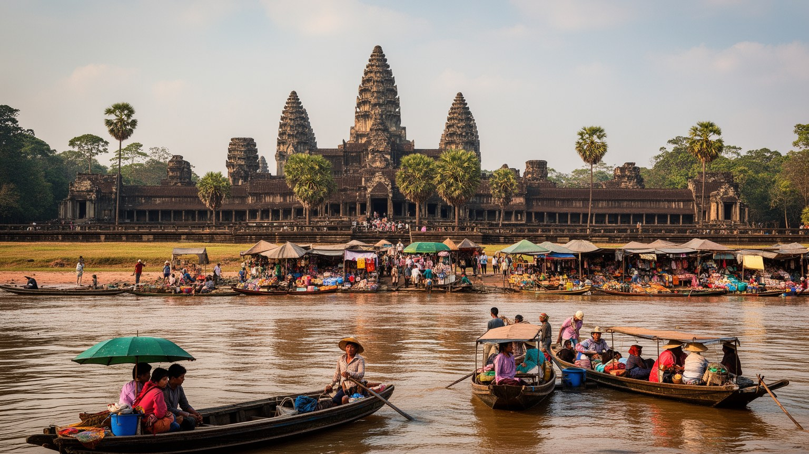
シェムリアップは、人口規模だけで見れば巨大都市ではありません。それでも世界都市アトラスに置く価値があるのは、クメール王朝の遺産、国際観光、農村の生活、仏教儀礼、水の季節、戦争後の復興が小さな都市空間に凝縮されているからです。アンコールはカンボジアの歴史的象徴であり、国家イメージ、外交、教育、収入の源でもあります。しかし、その玄関口であるシェムリアップを寺院観光だけで見ると、都市の大半を見落とします。ホテルの裏には洗濯と食品配送があり、舞台の裏には訓練と衣装制作があり、寺院への道の横には学校、僧院、田畑、保護区域の制約があります。観光が戻れば街は活気づきますが、外部ショックで収入が途切れれば、脆さもすぐに表れます。シェムリアップを読むことは、世界遺産が地域社会を豊かにする条件を考えることです。保存、観光、労働、住宅、水、教育、信仰を別々に扱うのではなく、寺院へ向かう一本の道の上でつながっているものとして見る必要があります。この都市の重要性は、古代の壮麗さだけでなく、過去を見に来る世界の視線を、現在を生きる住民の生活へどう返せるかにあります。シェムリアップは、遺産都市の成功と不安を同時に示す小さくも濃い入口です。世界的な名所が地域の誇りになるためには、保存費、雇用、教育、水管理、移動の利益が偏らず、住民が都市の将来を決める場に参加できることが欠かせません。